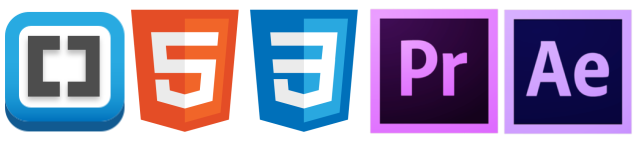
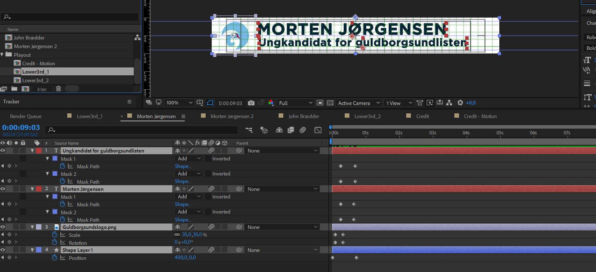

Værktøjer brugt i opgaven:

I denne opgave skulle vi producere en video til Everyday Projekt, som er et videounivers skabt af CPH:DOX, der er en dokumentarfilm festival. Projektet tager afsæt i videoer om virkeligheden og har fokus på almindelige menneskers ualmindelige historier. Vi havde to temaer vi kunne vælge i mellem. Det ene var Selvoptaget og det andet var Demokrati. Vi skulle selv ud og finde vores hovedperson, vi ledte efter en lidt skæv karakterer der passede til vores problemstilling.
Research
Vi brugte de første dage på at researche og havde mange ideer på bordet. F.eks. en tidligere bodybuilder der nu var blevet Croquismodel. Desværre faldt mange af ideerne til jorden pga. af den korte tidsfrist, men heldigvis kendte en fra vores gruppe en fyr der hed Morten, som boede på Falster. Han stillede op for en ungdomsliste til det kommende kommunevalg og var helt frisk på at lade sig interviewe. – Og så gik turen til Falster!
Turen til Falster
Vi opstillede en præmis, en logline og et koncept der skulle forme vores historie. Vi var alle klar over vi ville miste en produktionsdag ved at tage til Falster men efter nogle samtaler med Morten, stod det klart at der var en historie! Vi forberedte os ved at tjekke udstyr og lave interviewet på forhånd. Vi talte også om vores storyboard, men da vi ikke kendte noget til location fik vi kun skriblet nogle ideer ned.
I gruppen delte vi samme vision omkring projektet og blev hurtigt enige om hvor vi skulle optage. Vi fandt et stort gammelt vandtårn, som vi lavede interviewdelen i og bagefter fik vi aftalt et møde med Falsters borgmesteren John Bredder fra Guldborgsundlisten.
Postproduktionen
Da vi kom hjem til København, gik vi hurtigt i gang med at klippe videoen sammen. Først klargjorde vi materialet ved at konvertere råfilerne og derefter lavede vi multicams så vores 2 kameraer og den externe lyd kunne synces op. Ved hjælp af en funktion i Premiere Pro kunne vi alle sammen klippe i hvert vores projekt og til sidst samle det hele i en master version. Der blev klippet en Intro, interviewdel, borgmesterdel og Outro.

Her er første version af videoen
Efter afleveringen delte vi os i 2 hold og så alle produktionerne sammen. Undervisere og studerende delte kommentarer. Ud fra de kommentarer vi fik, klippede jeg lidt om i historien og tilføjede nogle ekstra grafiske elementer i form af end Credits og en Lower3rd der er inspireret af Guldborgsundlistens partifarver og logo. Lower3rd’en lavede jeg i After Effects, det tog ca. 20 min.
 Jeg har brugt partiets logo og keyframes til at fremstille de 2 Lower3rds
Se den endelige redigeret version af Falsters Fremtid
For at se vores aflevering til CPH DOX, der indeholder:
- 3 video embeded forskelligt i .html
- Præmis
- Logline
- Koncept
- Storyboard